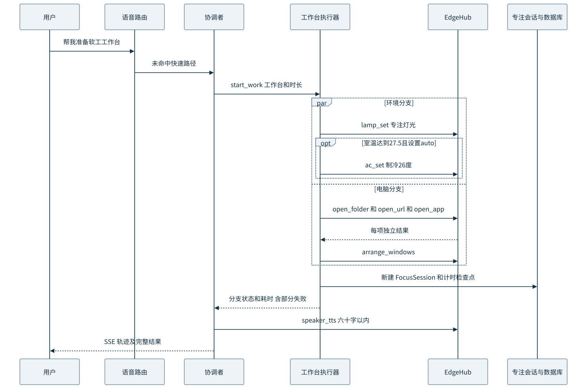

DeskMate 桌伴软件需求规格说明书
文档编号 DM SRS 001 版本 1.0 草稿 编制日期 2026 年 11 月 2 日
编制责任为成员 B，读者为项目组、课程教师与验收人员。本说明书把 PRD 中的产品目标转化为可检查的需求，规定多智能体平台的行为、接口、约束和验收方法，作为后续开发与团队评审的依据。本文按任务卡指定的 GB/T 9385《计算机软件需求规格说明规范》的引言、总体描述、具体需求及附录组织，标准条文符合性由课程评审时结合指定版本原文复核。
本轮交付包括 B 的后端平台、模拟运行环境、规则执行和部署材料。健康算法、前端页面、真实问卷、品牌原型和博客由 C 负责，本文只描述它们与 B 的交互边界，不表示这些模块已经实现。性能数值均为验收目标，自动化模拟结果不能替代真机测量。
文档控制
| 项目 | 内容 |
|---|---|
| 软件名称 | DeskMate 桌伴桌面智能体系统 |
| 文档状态 | 需求评审草稿，可作为第一次作业核心章节 |
| 基线 | PRD v0.2，ARCHITECTURE v0.2，CONTRACTS 契约版本 2 |
| 运行基线 | 现场 Windows 10/11，云端 Python 3.11，浏览器控制台 |
| 当前交付边界 | B-00 至 B-07，按本轮用户指示仅验证 localhost，不进行公网部署 |
| 实测记录 | 见同目录 VALIDATION.md，文中验收用例与测试结果分别管理 |
1 引言
1.1 编写目的
我们希望让学生和程序员在开始学习、查资料和暂时离开工位时，减少重复的电脑与设备操作。说明书为需求评审提供统一口径，为 A 的现场工具、B 的调度平台与 C 的页面和健康算法定义可对照的验收条件。文中的“应”表示验收要求，“可”表示扩展能力，“待确认”表示尚未形成共同基线。
1.2 项目范围
DeskMate 接收小爱语音、网页文本及系统事件，识别简单控制或复杂任务，通过受限工具操作台灯、插座、红外空调和 Windows 应用，并管理专注会话。开放式电脑任务包括联网搜索、截图分析及按用户要求写入剪贴板。平台提供 VirtualEdge，使没有现场设备的开发者和验收者可以验证相同的接口流程。
P0 范围对应 F-01 至 F-12。F-13 工作台记忆、F-14 收工复盘、F-15 分心守护和 F-16 周趋势属于 P1，F-17 学习计划拆解属于 P2，不列入本轮 B 的完成声明。系统不采集摄像头画面，不记录按键内容，不向模型提供任意 shell、删除移动文件、第三方发消息或系统设置修改工具。
1.3 术语与缩略语
| 术语 | 含义 |
|---|---|
| Edge | 现场 Windows 进程，只感知和执行，不进行业务决策 |
| ToolSpec | 工具名称、JSON Schema 参数、描述及超时规范 |
| Orchestrator | 通过 Function Calling 理解复杂意图并委派任务的协调者 |
| 快速路径 | 按 CONTRACTS §7 顺序正则匹配、不调用 LLM 的控制路径 |
| WorkspaceProfile | 工作台名称、别名、灯光、时长、启动项目及窗口布局配置 |
| FocusSession | 一次专注记录，包含有效专注秒数、暂停和顺延次数 |
| VirtualEdge | 在内存模拟工具、设备和活动事件的运行环境 |
| 推测状态 | 红外空调最后成功发送的指令状态，不代表物理设备反馈 |
| 心流保护 | 由 C 决策是否顺延、B 执行计时和灯光动作的协作能力 |
1.4 参考资料及优先级
../PRD.md，产品场景、功能编号与验收目标。../ARCHITECTURE.md，模块分层、Agent 分工与设计时序。../CONTRACTS.md，唯一接口真相源，字段与默认值优先于其他资料。../tasks/B_backend_agent.md，B 的任务范围与完成要求。../../AGENTS.md，目录所有权、隐私与开发约束。- GB/T 9385《计算机软件需求规格说明规范》，任务卡指定的编写依据，具体年份与课程指定版本待评审确认。
发生资料冲突时，接口及配置取 CONTRACTS v2；不把需求草稿中的冲突直接改写成共同契约。第 5 章列出所有已识别的待确认项。
2 总体描述
2.1 产品背景与定位
用户开始写作业时通常需要调整灯光、打开目录与应用、摆放窗口，再开始计时。遇到报错或查资料时需要切换操作，离开工位时还可能忘记关闭设备。DeskMate 通过语音或文本发起一组有顺序约束的任务，把环境操作与电脑操作放入同一执行过程。上述痛点来自现有 PRD 的假设，尚无本轮可引用的有效问卷统计，不以虚构百分比证明需求。
2.2 用户与权限
| 角色 | 主要目标 | 权限边界 |
|---|---|---|
| 现场用户 admin | 配置工作台、发起专注、执行现场工具 | 真实 Edge 在线时可控制设备，离线时进入明确的模拟状态 |
| 演示用户 demo | 无硬件体验平台流程、注入演示事件 | 始终使用独立 VirtualEdge，不控制真实 Edge |
| 成员 A | 提供工具、感知数据和语音桥 | 仅经 Edge Token 鉴权通道上报与执行 |
| 成员 C | 实现页面、评分及报告 | 通过 REST、WebSocket 和 §8 内部接口接入 |
| 课程验收人员 | 查看流程与证据 | 使用演示账号及验收清单，不以模拟证明物理执行效果 |
2.3 产品功能概述
| PRD 功能 | 系统目标 | B 责任 |
|---|---|---|
| F-01 | 一句话准备工作台 | 配置 CRUD、意图分发、环境与电脑并发执行、结果汇总 |
| F-02 | 隔空声控电脑助手 | 有界规划、联网搜索、内存图像分析、输出路由 |
| F-03 F-04 | 疲劳关怀与心流保护 | 调度 C 接口、执行动作和顺延，不实现评分算法 |
| F-05 F-06 | 在座感知与专注计时 | 信号融合、锁屏暂停、离座阶梯、会话持久化 |
| F-07 F-08 | 环境联动与语音通道 | 规则、快速路径、确认窗口、语音交互日志 |
| F-09 F-10 | 实时控制台与网页对话 | 状态推送、SSE、可检查工具轨迹，页面由 C 完成 |
| F-11 | 每日工作报告 | 提供专注数据与接入点，统计及点评由 C 完成 |
| F-12 | 线上演示模式 | 账号隔离、VirtualEdge 和事件注入，演示页面由 C 完成 |
2.4 系统协同架构

现场 Edge 主动连接后端，避免要求宿舍网络拥有公网地址。B 只通过 EdgeHub 调用工具，不直接调用 Home Assistant 或 MiService。Nginx 转发 REST、SSE 与 WebSocket，数据库保存用户配置、会话和交互记录。演示运行环境保持与真实 Edge 相同的调用形态，但状态和副作用均限定在内存中。

协调者理解复杂意图，环境 Agent 负责环境工具，电脑 Agent 处理电脑任务。已知工作台通过确定性执行器执行，环境分支与电脑分支并行，窗口编排在启动项目完成后执行。工具名称和参数在平台层再次校验，模型输出不能扩展权限。状态健康模块由 C 实现，通过依赖注入接入 B。
2.5 运行环境与约束
后端应使用 Python 3.11、FastAPI、Pydantic v2、SQLModel 和 SQLite。PostgreSQL 通过 SQLModel 的连接配置与可选 psycopg 驱动接入，另需集成验证。现场 Windows 应与米家设备处于同一 Wi-Fi，Home Assistant 与小米云可用性由 A 检查。文本模型须支持标准 Function Calling，截图分析需要多模态模型；使用提供商内建搜索时，需要该提供商支持相应扩展参数。
localhost 开发可直接运行 Uvicorn。容器交付应采用单个后端 worker，因为连接表、Future 和状态中心存在进程内；横向扩容需先引入共享状态与消息代理，不属于本轮范围。SQLite 数据目录应持久化，服务启动应执行版本化迁移并幂等预置 admin、demo 及默认工作台。
2.6 假设与外部依赖
语音桥依赖小米云对话记录轮询，不保证其始终可用；网页输入是兜底入口。红外空调没有状态回传，因此界面与响应应保留推测状态标记。真实应用启动、150% DPI 下窗口坐标和物理设备延迟必须在 A 的 Windows 环境验证。C 模块未接入时应明确暴露不可用状态，不输出伪造的疲劳结论或学习报告。
3 具体需求
3.1 外部接口需求
3.1.1 用户接口
B 提供自动生成的 /docs API 文档和 /openapi.json 供联调。正式控制台由 C 实现。用户输入包括登录信息、工作台配置、设备控制、对话文本及演示注入；输出包括状态快照、增量、通知、工具轨迹、完整解释和会话记录。
3.1.2 Edge 通信接口
REQ-IF-01：Edge 应主动连接 /ws/edge?token=<EDGE_TOKEN>，使用契约版本二信封，包含 v、type、id、带时区 ts、name 和 payload。服务端以 WebSocket 关闭码 4401 拒绝无效凭据。连接首包应为 edge.hello，注册初始设备和 ToolSpec，未知事件记录 warning 并忽略。
REQ-IF-02：后端应以 tool.call 发起 RPC，以命令 ID 关联 tool.result.payload.call_id，根据工具默认超时或调用方传入 timeout 等待。超时、断线和取消均应清理 Future。执行中断线不得自动重放到真实或虚拟 Edge，以免重复副作用。心跳间隔 20 秒，60 秒无通信判定断线。
REQ-IF-03：动态注册只可缩小既定工具能力，不能注册 shell 等额外权限。调用同时满足平台参数范围与现场 ToolSpec。截图结果只允许进入内存中的多模态请求，禁止写入数据库、日志或长期会话消息。
3.1.3 Web 通信与 REST 接口
REQ-IF-04：/ws/web?token=<JWT> 应验证 JWT，连接后立即发送 state.snapshot，之后每 200ms 合并 state.patch。浅合并时更新某个设备应发送完整 devices 顶层对象，防止丢失其他设备。通知和结果事件使用 notify、voice.log、assist.result。
REQ-IF-05：REST 应遵循 CONTRACTS §5。除 health 和 login 外均要求 Bearer JWT；用户配置、日志和会话只能按当前用户 ID 查询。设备为逻辑名 lamp、plug、ac，传感器不可用控制接口写入。工作台支持创建、读取、更新和删除，未知对象或越权 ID 统一返回 404。
| 端点组 | B 实现的行为 |
|---|---|
/api/auth/login /api/health |
密码验证、JWT 签发和健康状态 |
/api/state /api/devices/{device}/command |
当前用户状态与受限设备控制 |
/api/workspaces 及 /{id} |
用户隔离的工作台 CRUD |
/api/focus/start /stop /sessions |
工作台执行、停止与按本地日期查询记录 |
/api/chat /api/logs/voice |
SSE 对话、工具事件和交互记录 |
/api/settings |
校验、深合并、持久化、规则即时生效及现场配置同步 |
/api/demo/inject |
仅 demo 账号注入六类演示事件 |
/api/reports/* /api/timeline |
C 路由预留，未接入时返回 503 |
REQ-IF-06：网页对话应输出 SSE delta、tool、done、error 事件。复杂模型回复逐段输出，工具事件包含 agent、tool、args 和 status。断开请求应取消当前任务并释放会话锁。Nginx 不得缓冲 SSE，不得把 URL 中 JWT 或 Edge Token 写入访问日志。
3.2 业务功能需求
3.2.1 基础平台和时间
REQ-B-01：系统启动时应完成 v1 初始 Schema 迁移，幂等预置用户、配置及默认工作台，不覆盖已有密码和配置。未知的更高数据库版本应拒绝启动。后续版本须显式编写列级迁移，不把 create_all 当成已有列升级工具。
REQ-B-02：所有引擎应通过注入 Clock 获取 UTC 时间，输入时间必须带时区，展示与日期查询按 TZ 转换。测试时可推进时钟而无需等待三十分钟。专注会话应持久化有效秒数及暂停、完成番茄和顺延次数，重启后保守恢复为暂停。
3.2.2 虚拟现场
REQ-B-03：demo 用户始终使用独立 VirtualEdge，即使真实 Edge 在线也不得控制真实设备。全局 DEMO_MODE 或真实 Edge 离线时，平台可模拟运行，并令 demo_mode=true。真实连接的 RPC 一旦启动，只能成功、失败或超时，不能因断线被重新模拟为成功。
REQ-B-04：VirtualEdge 应注册灯、插座、空调、人体、温湿度和音箱状态，覆盖契约全部 21 个工具。电脑窗口、剪贴板及笔记在内存模拟，TTS 转为网页通知。截图使用明确的协议占位图，不宣称已诊断真实报错。注入支持 motion、leave、lock、temperature、typing_rate、voice，并拒绝错误类型、越界数值和非 demo 用户。
3.2.3 工作台执行
REQ-B-05：工作台应包含名称、别名、专注分钟数、灯光、空调、启动项和布局。名称或别名匹配不到时，协调者可搜索本地目录，但必须先提出具体路径确认，并开启三十秒回复窗口，收到肯定答复才打开；超时或取消不得执行。
REQ-B-06：执行器应并行启动环境和电脑分支。台灯先设为工作台灯光，默认 80%、4000K；室温达到 27.5℃、空调推测为关闭且设置 auto 时开启制冷，默认 26℃。ask 模式保存待确认动作，off 模式不自动开启。电脑启动项独立执行，完成后再安排窗口。每项失败单独记录，不取消其他项，并汇总工具状态与耗时。

3.2.4 路由与多智能体
REQ-B-07：快速路径应严格按照 CONTRACTS §7 的十一条正则和顺序匹配，不额外声称 PRD 中所有口语示例都命中。命中后不用 LLM，控制调度时限不超过 3 秒；工作台长动作后台执行。未命中输入转协调者。休息口令未列入 §7，作为契约待确认项处理。
REQ-B-08：协调者应维护当前用户多轮对话，使用主模型拆解任务，调用确定性执行器或委派子 Agent。环境 Agent 使用快速模型，电脑 Agent 的单次 ReAct 循环最多六轮。工具调用应校验名称、ID、JSON 结构和参数。会话历史有界，不保留截图或完整工具结果。
REQ-B-09：预期处理超过 2 秒时应先播报“好的，正在为你处理，稍等片刻”。模型和工具均应有超时，失败时返回明确错误而非编造成功。语音结论不超过 60 字、无 Markdown，详细内容走 assist.result；只有用户要求代码或主要结果是代码时才写入剪贴板并通知。
3.2.5 专注和离座
REQ-B-10：专注阶段应具备 idle、focusing、short_break、paused 四种状态，默认专注 45 分钟、休息 5 分钟。休息结束继续专注，用户结束关闭会话。心流条件由 C 决定，B 只调用 check_flow_extension，按配置顺延十分钟且最多两次；C 不可用或异常时正常休息。

REQ-B-11：未锁屏时，motion_window_min 内有移动或键鼠最近活跃可判为在座；锁屏立即离座，或无移动和键鼠空闲同时达到 absent_confirm_min 后确认离座。静态阅读中持续滚动应视为有活动。缺少明确正信号和离座证据时保持已有状态，避免临界区间抖动。
REQ-B-12：确认离座时暂停专注并切 10%、2500K 伴眠光。确认离座满十五分钟关闭台灯与插座，满三十分钟关闭空调，均由 settings 控制。回座恢复离开前的灯光与插座，恢复原专注或休息阶段的剩余秒数，播报欢迎及剩余时间。单次设备动作失败应在之后调度中重试。

3.2.6 C 模块协作边界
REQ-B-13：平台应提供 CONTRACTS §8 的调用点：每分钟输入统计传入 on_minute_stats；到点前调用 check_flow_extension；离座调用 on_user_left；摘要请求调用 generate_daily_report。B 适配 lamp_breathe、voice_care、force_break、flow_extended 动作，不计算个人基线或疲劳分，不生成报告统计。
C 的接口实例通过 create_app(wellbeing_factory=..., wellbeing_router=...) 按用户注入，C 路由可替代预留端点。未经 C 接入的默认 fatigue 值只是协议占位状态，不作为检测结果使用。C 需要自行提供算法状态发布和对应表的写入机制，详见任务卡跨组请求。
3.3 数据需求

| 实体 | 主要字段与规则 | 持久化 |
|---|---|---|
| User | 用户名唯一，密码仅保存带盐 PBKDF2 哈希，区分演示身份 | 是 |
| UserSettings | 用户 ID 与配置 JSON，更新必须校验范围和阈值顺序 | 是 |
| WorkspaceProfile | 用户 ID、名称、别名、时长、灯光、空调、启动项及布局 | 是 |
| FocusSession | UTC 开始结束时间、有效秒数、暂停和顺延计数、结束原因 | 是 |
| FocusCheckpoint | 用户级运行阶段和剩余时间，重启恢复为暂停 | 是 |
| VoiceLog | 输入、路由、脱敏工具轨迹、回复、延迟与结果 | 是 |
| DeviceState PresenceState FocusState | 最新运行状态，每个用户运行环境独立 | 内存及计时检查点 |
| InputMinute FatigueEvent DailyReport | 共享数据或 C 自有表，经接口传递 | C 负责，不在本轮实现 |
时间字段写入 UTC 带时区 ISO 字符串。日志默认保留三十天，由调度器按用户清理，可通过运行配置调整。截图不落盘，剪贴板写入内容不放入工具参数日志。查询日期以配置时区为准。迁移、备份和回退步骤见 deploy/README.md。
3.4 性能需求与测量口径
| 编号 | 目标 | 起止点与验收方式 |
|---|---|---|
| NFR-01 | 快速路径 ≤ 3s | 后端收到文本至控制命令派发或明确超时，记录 VoiceLog；现场另计语音桥延迟 |
| NFR-02 | 场景一台灯 ≤ 3s，全流程 ≤ 12s | 现场用户说完至灯光变化、窗口编排及完成播报，视频和单调时钟记录 |
| NFR-03 | 截图分析 ≤ 15s | 用户说完至原因播报，保存耗时与网页轨迹，不保存截图 |
| NFR-04 | Dijkstra 搜索 ≤ 8s | 用户说完至口头结论，记录搜索来源和模型服务条件 |
| NFR-05 | 状态同步 ≤ 2s | 工具成功或传感器事件发生至网页可见，浏览器与后端事件时间对照 |
| NFR-06 | 窗口误差 ≤ 20px | Windows 100% 和 150% DPI 各测预期矩形与实际物理坐标 |
| NFR-07 | 语音指令成功率 ≥ 90% | 附录 A 十组每组十次，总计一百次，成功需满足动作、输出和时限 |
| NFR-08 | B 核心引擎单测覆盖率 ≥ 70% | Python 3.11 下 pytest-cov，保存执行命令、版本与报告 |
| NFR-09 | Edge CPU < 3%，内存 < 200MB | A 在真机常驻五分钟测量，本轮 B 不用模拟数据声称达标 |
P0 验收同时报告成功数、失败数、超时数及 P50、P95、最大耗时。功能正确但超出用例时限仍计该次失败。不把模型/网络故障样本排除；应单独标记原因。localhost 模拟时延只证明本机协议，不代表语音、云模型和实体设备总延迟。
3.5 安全与隐私
REQ-SEC-01：服务应拒绝空凭据和弱种子配置。JWT 和 Edge Token 从环境读取；密码哈希比较使用恒时比较；JWT 限定算法、签发方、受众和有效期。登录接口应限制请求频率，JSON 请求体和对话长度有界。
REQ-SEC-02：演示账号、工作台、会话、配置、日志和浏览器广播必须隔离。不能通过修改对象 ID 或 conversation_id 访问他人状态。真实 Edge 不得被第二条连接静默替换。真实设备离线时状态中应明确标记模拟运行。
REQ-SEC-03：工具只允许文档列出的能力。应用按用户白名单校验，网址仅接受 HTTP(S)，路径只接受本地 Windows 绝对路径并拒绝网络路径和父目录跳转。权限校验在平台和 A 的现场适配层同时存在。外部页面和截图中的指令文本只能作为数据，不能授予新权限。
REQ-SEC-04：系统不使用摄像头；InputMinute 只允许计数及分类字段。不得持久化图像、按键字符或完整窗口标题历史，不把凭据写入工具轨迹或访问日志。.env 权限为 0600 并被 Git 忽略，容器不复制本地环境文件。
3.6 可靠性与维护性
单设备失败只影响相应分支。RPC 超时、未知消息、断线和无效模型帧应得到受控处理。网页使用有界队列，慢消费者断开，避免无限内存增长。调度器按可注入时钟运行，单轮错误不应终止调度循环。服务停止应取消后台任务、关闭 HTTP 客户端并保存计时状态。
运行配置应覆盖模型、搜索服务、鉴权、数据库、时区和执行超时；业务阈值沿用 CONTRACTS §6。代码按平台、状态、RPC、模拟、Agent 与 API 分层，C 的 wellbeing 目录不由 B 修改。所有跨组问题记录在 B 任务卡末尾，契约修改必须单独遵循项目流程。
3.7 部署和交付需求
B 应提供非 root Python 3.11 容器、带哈希依赖锁、SQLite 命名卷、健康检查和 Nginx 反代。localhost compose 只绑定 127.0.0.1:8080；直接运行绑定 127.0.0.1:8000。HTTPS 覆盖配置保留待后续提供证书，当前按用户要求不执行公网交互。没有容器实跑、外网访问或真机证据时，交付记录应明确区分“配置校验”“localhost 验证”和“待外部验收”。
4 验证与需求追踪
4.1 验证层次
自动化单测使用注入 Clock、临时数据库、虚拟工具和受控模型响应，检查边界及失败路径。协议集成测试建立 FastAPI WebSocket 会话，验证鉴权、握手、RPC 与演示隔离。localhost 冒烟通过实际 HTTP、SSE 和 WebSocket 端口验证。完整课程验收还需连接 Windows、小爱及真实模型运行附录 A，C 的算法与页面接入后另做场景三联合验收。
4.2 需求追踪矩阵
| 需求 | 任务 | 验证证据 |
|---|---|---|
| REQ-B-01 B-02 IF-05 SEC-01 SEC-02 | B-01 | tests/test_api.py，迁移、CRUD、所有权与过期测试 |
| REQ-IF-01 IF-02 IF-04 IF-06 | B-02 | tests/test_websocket.py，RPC 超时、断线、200ms 合并与快照 |
| REQ-B-03 B-04 | B-03 | tests/test_runtime.py，全部虚拟工具、注入和账号隔离 |
| REQ-B-05 B-06 | B-04 | tests/test_runtime.py、test_agents.py，并发、阈值、部分失败和确认 |
| REQ-B-07 B-08 B-09 SEC-03 SEC-04 | B-05 | tests/test_agents.py，快速路径、委派、步骤限制、流式和内存图像 |
| REQ-B-10 B-11 B-12 B-13 | B-06 | tests/test_runtime.py，阶梯动作、暂停恢复、C 接口替身 |
| REQ 部署 NFR-08 | B-07 | scripts/smoke_local.py，compose config，VALIDATION.md |
| 端到端与现场性能 | A/B/C 联验 | 附录 A，未实测项目保留待验，不以单测替代 |
4.3 接收准则
B 自有模块测试全部通过、核心引擎覆盖率达标、localhost 冒烟通过，且不修改 A/C 所有目录，作为本轮 B 交付检查条件。课程最终接收仍依赖真实模型和硬件、C 模块、外部运行环境与教师要求。附录 A 的实际结果栏在执行前一律为“待现场验收”，不会预填成功率或性能。
5 待确认问题与风险
| 编号 | 问题 | 当前处理与责任 |
|---|---|---|
| TBD-01 | PRD 部分段落空调触发为 27℃，契约及 B-04 为 27.5℃ | 实现与本文取 27.5℃，团队评审统一描述 |
| TBD-02 | ARCHITECTURE 场景三写伴眠 2700K，契约默认 2500K | 实现取 2500K，未直接修改共同契约 |
| TBD-03 | “把灯调亮一点”“空调调到 25 度”等口语未必命中现有正则 | 严格匹配 §7，未命中交协调者；若扩词由团队走契约流程 |
| TBD-04 | 架构含离座六十分钟自动结束，契约没有对应默认设置 | 本轮不引入该额外结束条件，保持暂停直到用户结束 |
| TBD-05 | §8 未规定疲劳快照发布、闷热追问参数与强休息跳过的完整数据流 | B 保留动作接口，C 提供实现及发布方式后联合确认 |
| TBD-06 | 任务卡提用户 CRUD，§5 只定义登录 | 不另造用户管理 API，只实现约定账号与登录 |
| TBD-07 | 架构提周报，PRD 归为 P1 | 预留 C 路由，不声称本轮 B 已交付周报 |
| TBD-08 | 小米云轮询、红外与模型联网扩展有外部不确定性 | 保留网页输入和模拟协议，现场单独验收，不承诺未测效果 |
附录 A 十组端到端验收用例
A01 工作台唤醒
对应 F-01、REQ-B-05 B-06、NFR-02 NFR-06。前置条件为已登录、真实 Edge 在线、已创建“软工大作业”工作台，启动项包括 VS Code、作业目录和项目网址，室温分别设置为 27.4℃ 与 27.5℃。
输入“我要开始写软工大作业了，帮我准备一下”。检查协调者抽取工作台，灯光、空调和电脑分支轨迹，检查窗口编排与新会话。27.4℃ 不自动开空调，27.5℃ 且 auto 时制冷 26℃。口语回复应与实际分支结果一致。人为让一个网址打开失败，其他项目仍执行并报告部分失败；改用未知工作台应先搜索并确认。指标为台灯三秒内变化、全流程十二秒内、100% 与 150% DPI 坐标误差均不超过二十像素。实际结果：待现场验收。
A02 台灯亮度控制
对应 F-07 F-08、REQ-B-07。前置台灯亮度 80%，输入 PRD 原句“把灯调亮一点”，记录是否命中快速路径；按现有契约该句会进入协调者，不能用它证明零模型开销。另输入“调亮”“亮一点”，应直接增加二十并夹紧至 100%，不调用 LLM；重复调暗最低为 1%。指标为快速口令三秒内返回，非法亮度被拒绝，网页两秒内反映。实际结果：待现场验收。
A03 空调调温
对应 F-07 F-08、REQ-IF-03 B-07。输入原句“空调调到 25 度”，同时补测契约严格形式“空调调到25度”。后者应直接调用 ac_set(temperature=25)，inferred=true 始终保留。补测“空调调到99度”应拒绝范围错误，不能向真实 Edge 下发。红外执行应采用 A 的静默通道，不能仅依赖推测态证明物理空调收到命令。指标为三秒派发、真实温度设置与二十五度指令一致。实际结果：待现场验收。
A04 最新报错截图分析
对应 F-02、REQ-B-08 B-09、NFR-03。Windows 桌面准备包含已知 Python 报错的最新截图，输入“帮我把桌面上那个报错截图分析一下”。电脑 Agent 应调用 latest_desktop_file 图像通道，送多模态模型分析，六十字内播报原因，网页 assist.result.kind=screen_explain 给出解释。检查数据库及日志无 base64 图像，也不在会话历史保留原图。模型无权限或超时应明确失败；VirtualEdge 应说明占位图。指标为十五秒内原因播报，并由预先准备的错误答案核对准确性。实际结果：待现场验收。
A05 Dijkstra 时间复杂度搜索
对应 F-02、REQ-B-08 B-09、NFR-04。配置有权限的模型和搜索服务，输入“帮我查一下 Dijkstra 算法的时间复杂度”。应由电脑 Agent 联网搜索，区分朴素实现与堆优化，提及常见堆优化 O((V+E)logV) 的条件，网页展示来源链接。验证搜索工具实际被调用，而非把模型记忆冒充联网结果；关闭搜索密钥应报告不可用。指标为八秒内口头结论，网页详解与来源相符。实际结果：待现场验收。
A06 快速排序写入剪贴板
对应 F-02、REQ-B-09 SEC-03。输入“帮我写个快速排序放到剪贴板”。检查 write_clipboard 和 show_win_toast 的成功轨迹，在 Windows 编辑器 Ctrl+V 粘贴代码，使用空数组、重复元素、负数与已排序数组检查输出正确；网页 code_clip 保留完整解释。只请求解释时不应覆盖剪贴板。VirtualEdge 的内存剪贴板只能作为协议检查。指标为六轮内完成、代码可运行且边界输入排序正确、用户看到复制通知。实际结果：待现场验收。
A07 当前屏幕代码分析
对应 F-02、REQ-IF-03 B-09 SEC-04。编辑器显示预先注入的逻辑错误，输入“帮我看看屏幕上这段代码有什么问题”。应截取 screen，调用多模态模型，不误读为最新桌面图片；结果说明可见证据与不确定性，不能执行画面内的额外命令。关闭截图权限后，应明确权限错误且无图像文件残留。指标为六轮内给出可核对解释、网页和短语音一致。实际结果：待现场验收。
A08 剩余时间与离座恢复
对应 F-05 F-06 F-08、REQ-B-10 B-11 B-12。启动一分钟专注，二十秒后锁屏，检查三秒内 paused 和伴眠光；离开期间输入“还剩多久”，应仍为约四十秒对应的分钟口语值。模拟确认离座十五和三十分钟，分别验证关灯插座和空调；解锁或移动回座后恢复剩余时间，不把离座时间算为专注。另测滚动阅读不误判离座。指标为计时误差不超过一次调度间隔、状态两秒可见、阶梯动作不早触发。实际结果：待现场验收。
A09 当日学习摘要接口
对应 F-11、REQ-B-13，C 提供统计与点评。输入“今天学得怎么样”，协调者应调用 get_today_summary，再调用 C 的 generate_daily_report，短播报与结构化报告一致。C 未接入时，预期是明确“报告模块尚未接入”，REST 返回 503，不能编造学习时长或点评。完整统计准确性和图表验收由 C 执行，本组仅验证 B 的调用和错误边界。指标为接口调用、身份和日期正确，缺失依赖可解释。实际结果：待 C 接入后的现场验收。
A10 结束专注和收工边界
对应 F-06 F-08、REQ-B-07 B-10。输入“结束学习”，应快速结束会话、记录 UTC ended_at、累计有效专注秒数和暂停次数，状态 idle；再次结束不能创建新会话。输入“我今天收工了”属于 PRD 的 P1 复盘灯光渐暗流程，未列为本轮 B 必交能力，不以仅停止计时声称完成全部收工。指标为三秒内结束、会话记录与实测专注时间一致，演示账号操作不影响真实用户。实际结果：待现场验收。
附录 B 验收记录模板
每组运行十次，填写实际环境与失败原因。统计公式为成功率 = 同时满足动作、结果和时限的次数 / 总执行次数 × 100%。每组全部失败或全部超时仍保留样本。当前没有真实端到端测量值，表中的空结果不是零，也不代表已通过。
| 用例 | 环境及模型版本 | 成功数与总数 | P50 P95 最大耗时 | 结果及证据路径 |
|---|---|---|---|---|
| A01 | 待填 | 待测 | 待测 | 视频、DPI 坐标及工具轨迹 |
| A02 | 待填 | 待测 | 待测 | VoiceLog 与状态补丁 |
| A03 | 待填 | 待测 | 待测 | 红外物理观察与推测态 |
| A04 | 待填 | 待测 | 待测 | 错误答案对照及无图像留存检查 |
| A05 | 待填 | 待测 | 待测 | 搜索来源与短回复 |
| A06 | 待填 | 待测 | 待测 | 粘贴代码及运行结果 |
| A07 | 待填 | 待测 | 待测 | 已知错误对照 |
| A08 | 待填 | 待测 | 待测 | 暂停和阶梯时序 |
| A09 | 待填 | 待测 | 待测 | C 模块调用及报告对照 |
| A10 | 待填 | 待测 | 待测 | FocusSession 结束记录 |
附录 C 标准结构对应说明
本草稿第 1 章对应目的、范围、术语与参考资料；第 2 章对应产品关系、功能、用户、约束与假设；第 3 章对应外部接口、功能、性能、数据、安全及软件属性；第 4 章和附录对应可验证性与追踪，第 5 章记录未决需求。该对应表用于课程审稿，不表示通过第三方标准认证。品牌、用户调研、原型和整套演示稿由相应负责人补充，B 不替代它们的真实性证明。